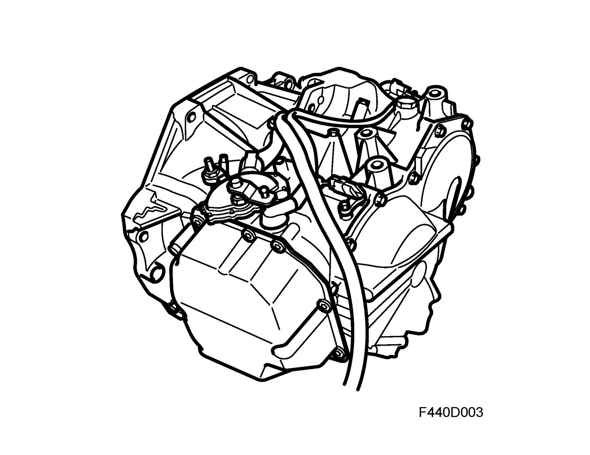

Brief Description
Brief description FA 57
The FA 57 automatic transmission is an electronically-controlled 5-speed automatic gearbox with lock-up. The transmission casing constitutes one unit integrated with the engine, which is mounted transversely in the engine bay and drives the front wheels. The different gear positions, P-R-N-D-M, can be selected with gear selector mounted on a floor console between the front seats.
The FA 57 is principally constructed around 4 planetary gear units, disc clutches, brakes and torque converter with lock-up coupling, which can be locked or allowed to slip in certain operating conditions. The transmission is equipped with hydraulic and electronic control systems.
The transmission hydraulic system is controlled by a control module (TCM), which continuously processes information from its own sensors and other control modules. The control module is adaptive, which means that it allows fro internal wear in the transmission and compensates accordingly, giving comfortable shifting even at high mileage. It is also SPS programmable using Tech 2.
The FA 57 has the following advantages over conventional hydraulic transmissions:
- Improved shifting performance and smoother shifting as torque is reduced when shifting takes place.
- Reduced mechanical stresses on the entire drive train due to torque limitation.
- Improved fuel economy thanks to consumption-optimized driving programs.
- Possibility of manual shift by moving the gear selector lever to M+ (shift up) or M- (shift down).
- Self-diagnosis and storage of diagnostic trouble codes.
- TCM sends and receives information from other control modules in the car on a bus communication system, see Functional description, bus communication.
Shifting
At which speed and load shifting is to take place is determined by TCM based on accelerator pedal position and rotational speed of the output shaft. TCM then activates solenoids that are part of the hydraulic control system to lock or release clutches and brakes respectively. This combination of locked or released clutches and brakes will achieve the desired gear ratio.
Safety features
There are a number of safety features integrated in the system to protect the transmission. These include DPS to protect the differential, special temperature programs to prevent overheating and automatic reverse detent at forward speeds exceeding 7 km/h. If a major fault occurs, the limp-home function will engage to allow the car to be driven but with considerably reduced functionality, which means that only 5th, 2nd and reverse gears can be engaged.
Special gear change program
The special gear change program is selected automatically depending on the load on the engine. Shifting takes place at a higher engine speed and the gear remains engaged linger if the control module detects that the load is not being reduced. This gear change program is intended to avoid unnecessary shift up and shift down when e.g. driving up long inclines with a trailer. Due to the lower engine power available at high altitude (approx. 2400 meters above sea level), a special gear change program will engage to "help" the engine by allowing it to run at a higher rpm before shifting up. A similar process takes place when the engine is cold. The program brings the engine up to operating temperature faster and thereby reduces emissions.